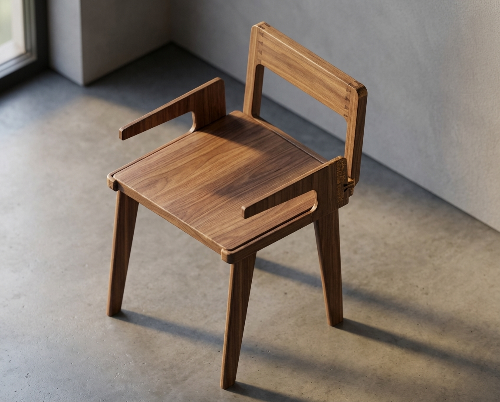
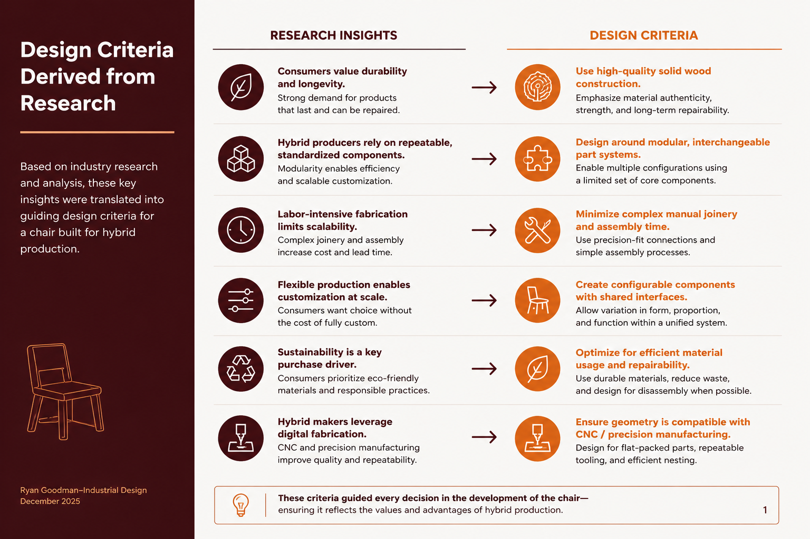
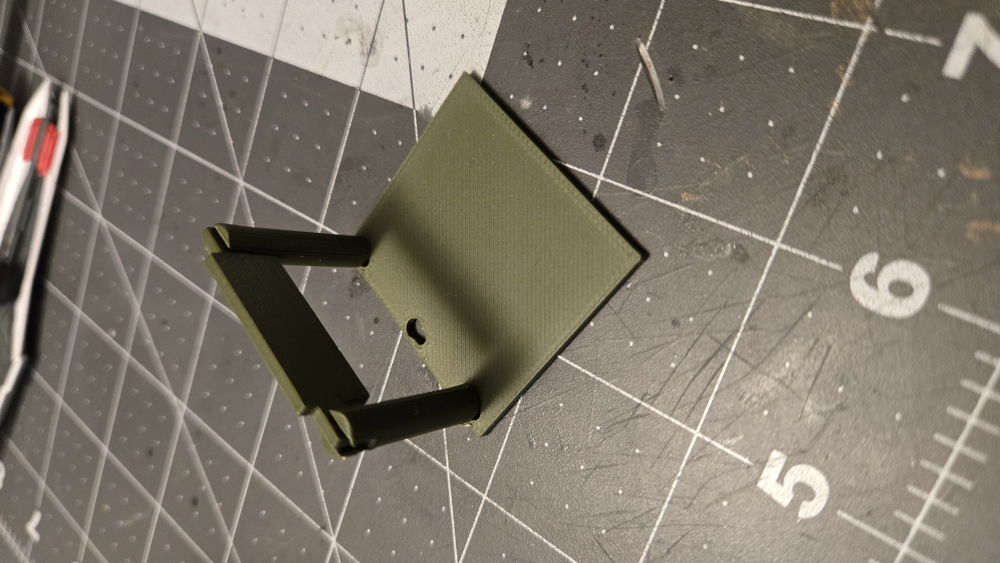
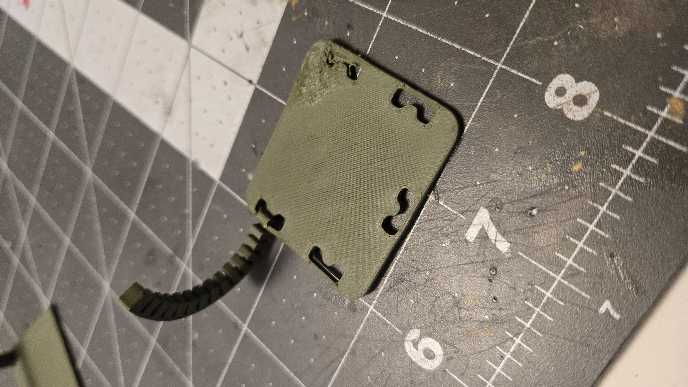
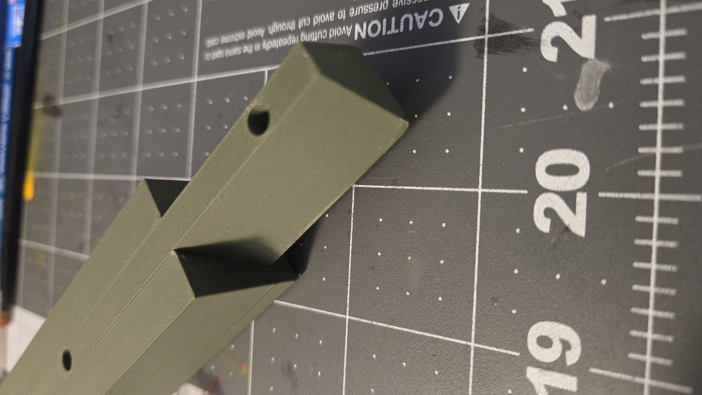
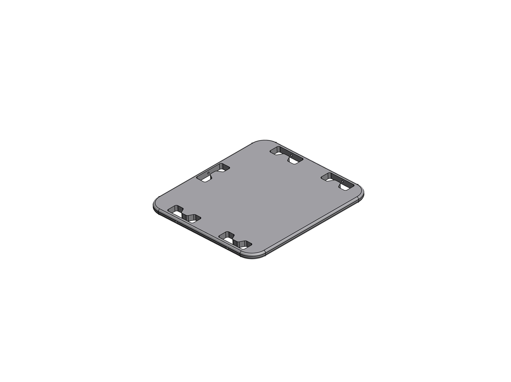
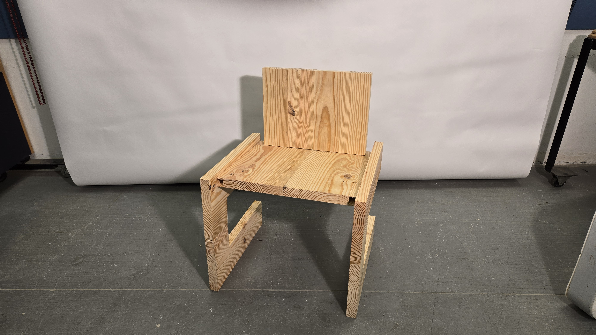
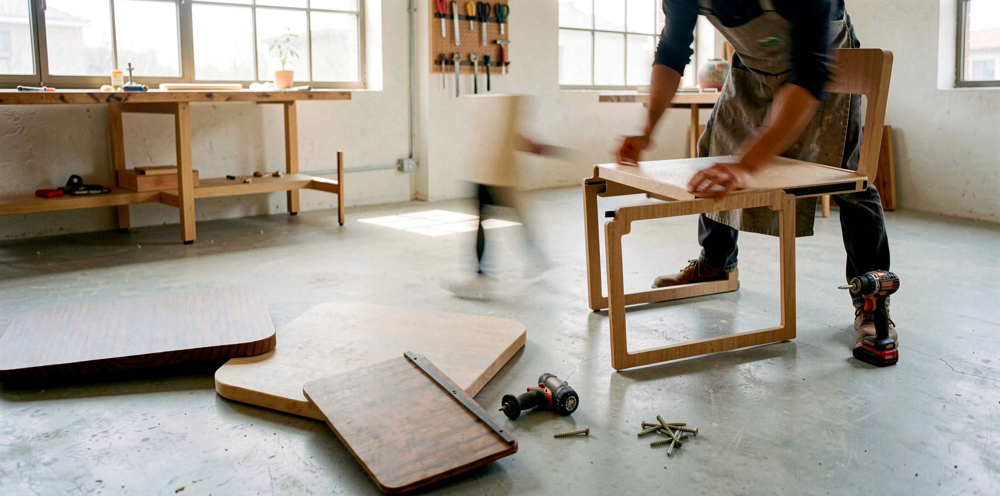
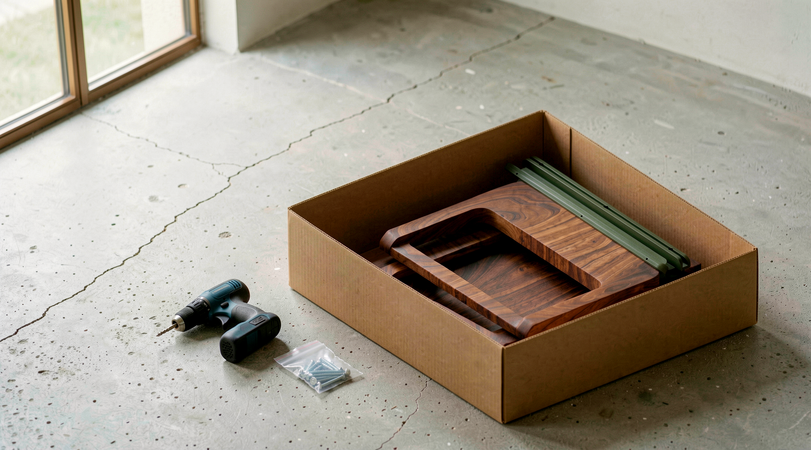

Built to fix the joinery problem that keeps hybrid furniture production from scaling.
Industry Research
Before designing anything, I spent a semester mapping the furniture industry. The US market is a $193B landscape broken into four tiers: Mass-Market, Mid-Market, Boutique Craft, and Hybrid Custom. Most furniture lives at the extremes — cheap and scalable, or handcrafted and expensive.
The hybrid-custom segment sits at roughly 10% of the market, but research showed it's the least served and sits at the sweet spot across five axes: Craftsmanship · Cost · Output · Customization · Sustainability.
Maker Interviews
I conducted site visits and interviews with Columbus-area furniture makers. The deepest case study was A Carpenter's Son Design Co. — a hybrid fabricator that started selling cutting boards as a fundraiser and grew into heirloom furniture.
Their workflow: Design Proposal → Fabrication (4 fabricators, 1 piece per maker) → Finishing (2 finishers on every piece) → Onsite Install. No automation, but technology used selectively to improve workflow without sacrificing craft.
- Josh Scheutzow — Founder
- Brad Hosfeld — Lead Designer
- Cain Lackey — Shop Manager
- Ellen Vail — Project Coordinator
The connector strategy didn't come from aesthetics — it came from understanding exactly where hybrid production breaks down.
Design Brief
The research surfaced a consistent theme: the thing that kills lead time in hybrid production isn't the woodworking — it's the joinery. Complex manual joints require skilled labor, slow fabrication, and can't be repeated on a CNC without losing the craft feel hybrid buyers pay for.
That became the design brief: a connection system that is strong, repeatable, tool-minimal, and CNC-compatible — without sacrificing the solid wood material that defines this market.
Insight → Requirement
Mapping each research insight to a hard design requirement.
Consumers value durability and longevity
Use high-quality solid wood construction
Hybrid producers rely on repeatable, standardized components
Design around modular, interchangeable part systems
Labor-intensive fabrication limits scalability
Minimize complex manual joinery and assembly time
Flexible production enables customization at scale
Create configurable components with shared interfaces
Sustainability is a key purchase driver
Optimize for efficient material usage and repairability
Hybrid makers leverage digital fabrication
Ensure geometry is CNC / precision compatible
Iteration Matrix
I sketched across the full space of connection strategies before committing. Five made it to physical prototype. Each was handled, loaded, and assembled before moving on. The bracket won because it did something the others didn't: it was both the structural connector and the visual feature.
Strong, but not versatile — locked into one configuration. Abandoned.
Strong, but limiting — restricted seat/back combinations.
Iterated for insertion force and fit tolerance. Promising, but bracket beat it on flexibility.
Intuitive assembly. Promising direction, but less self-aligning than the dovetail geometry.
Self-aligning, CNC-compatible, structural + visual. Selected — both connector AND feature.
Build Log
Eight weeks. Sketches → CAD → print → break → CAD → print → CNC. The full record below — the dead ends are as important as the breakthroughs.
Industry mapping — four-tier framework
Mapped the US furniture market across Mass-Market, Mid-Market, Boutique Craft, Hybrid Custom. The hybrid-custom tier is the underserved opportunity — 10% of the market sitting at the sweet spot across craftsmanship, cost, output, customization, and sustainability.

Maker interviews — A Carpenter's Son Design Co.
Site visits with Josh Scheutzow, Brad Hosfeld, Cain Lackey, Ellen Vail. Their workflow: Design Proposal → Fabrication (4 makers, 1 piece each) → Finishing (2 finishers per piece) → Onsite Install. Joinery — not woodworking — is what kills lead time.

Connector ideation — exhaust the space
Sketched across sliding interfaces, slide-and-lock mechanisms, compression concepts, interlocking geometries, mortise-and-tenon, finger joints, dovetail-inspired geometries, screw-in-place fasteners. The goal: don't pick early. Exhaust the option space first.

First rapid prototypes — PLA print farm
Printed early geometry for all five connector strategies. Mortise + tenon strong but rigid; vertical interface restrictive; peg/socket workable but no self-alignment.

Hand-testing — insertion force, load
Each iteration handled, loaded, and assembled before moving on. Dovetail geometry began to separate from the pack: self-aligning during assembly, no hardware to hide.

Selected: dovetail-inspired bracket
The bracket won because it did something the others didn't: it was both structural connector AND visual feature. CNC-compatible, no manual joinery, self-aligning. Two brackets per chair: seat-to-frame, backrest-to-frame. Any seat pairs with any backrest.

SolidWorks geometry — CNC validation
Bracket profile drawn in SolidWorks. Geometry checked against CNC end-mill diameters and step-down tolerances. Slot width iterated 3× — final spec lands at .250" with a .003" interference fit.

KeyShot renders + walnut prototype
Currently in shop: full chair walnut prototype, brackets cut on the school CNC. KeyShot configuration renders for the modular system — dining, lounge, task, barstool — all the same bracket.

First PLA print run — connector prototype, Feb 2026
Connector plate iterations on the cutting mat
Final dovetail bracket — CNC-ready geometry, May 2026
The Connector
The dovetail-inspired bracket is the system's core. It self-aligns during assembly, requires no complex manual joinery, and is fully CNC-compatible for repeatable hybrid production. Each chair uses two brackets — one connecting the seat to the frame, one connecting the backrest — giving the system its modularity: any seat pairs with any backrest.
Modular system disassembled — three components, two brackets, one flat box
Assembly
Frame → brackets → seat → backrest. The shared interface means components can be swapped, reconfigured, or replaced independently — without disassembling the whole system.

Assembly in the shop — tool-minimal, for fabricators and end users alike

Seat slides into the bracket track — no alignment guesswork
Configurations
Because every component shares the same connector interface, the system produces a genuine range — not just colorways, but structurally different configurations. Dining, lounge, task, barstool. Walnut, oak, ash, painted. The bracket is the constant. Everything else is a variable.

Unlimited configurations from one connector — shared bracket, different components
Flat-Pack
The same modularity that enables configurations also enables flat shipping. Components nest flat in a compact box — reduced volume, reduced damage risk, reduced cost. The design criteria built this in from day one. It wasn't a feature added at the end.

Ships flat — all components in one compact box

Move, reassemble, reconfigure — the same system that ships flat moves with you